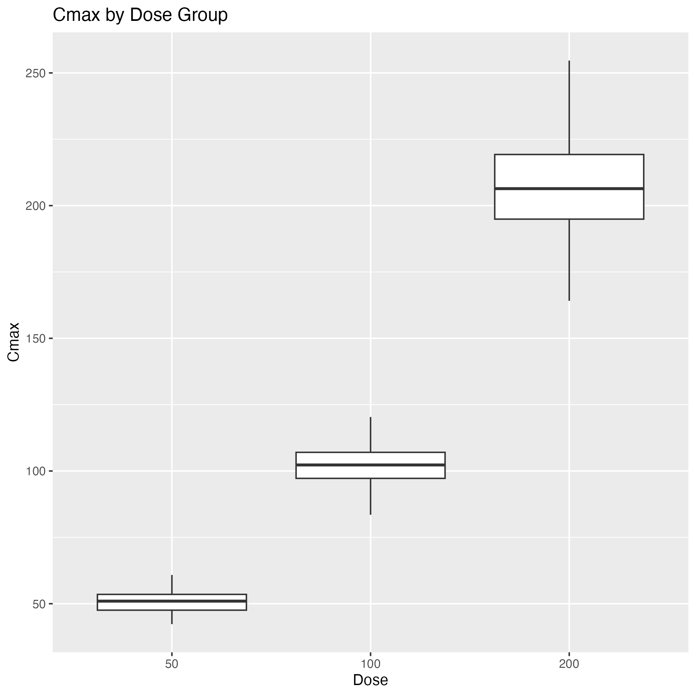
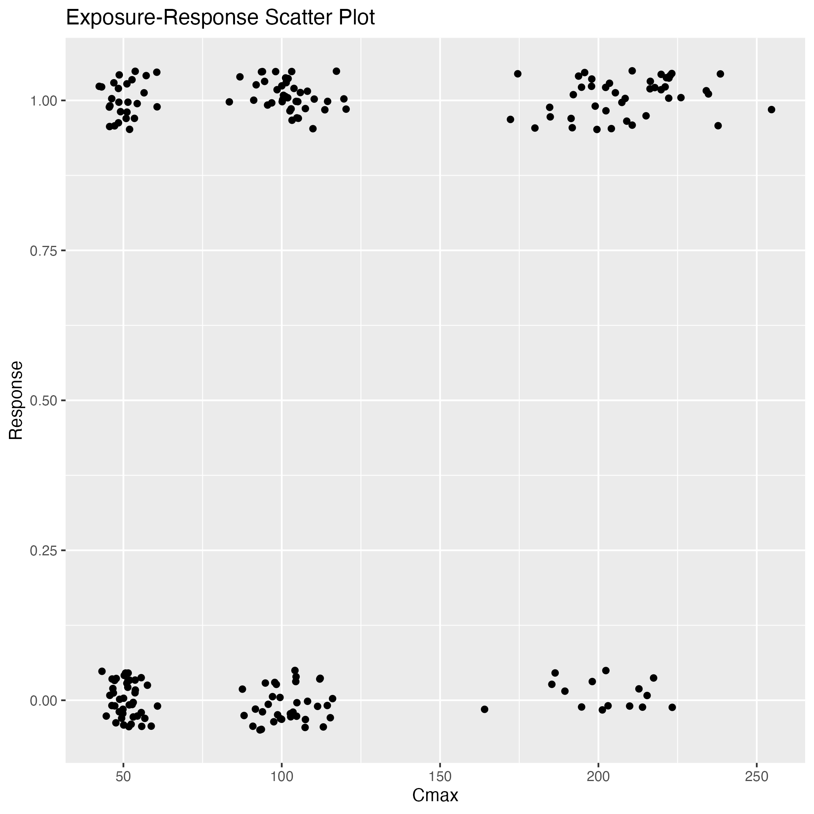
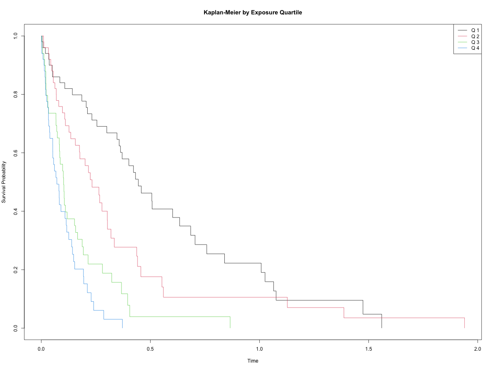
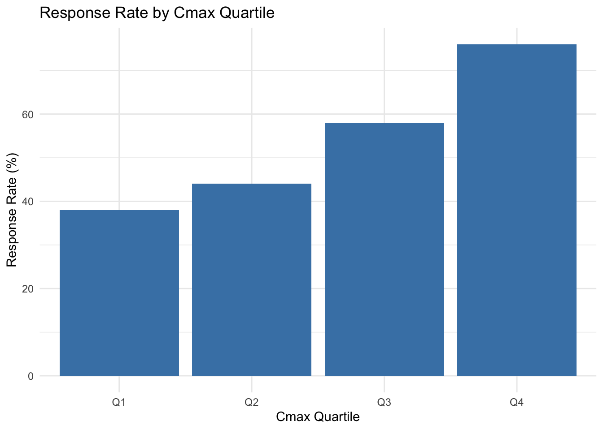
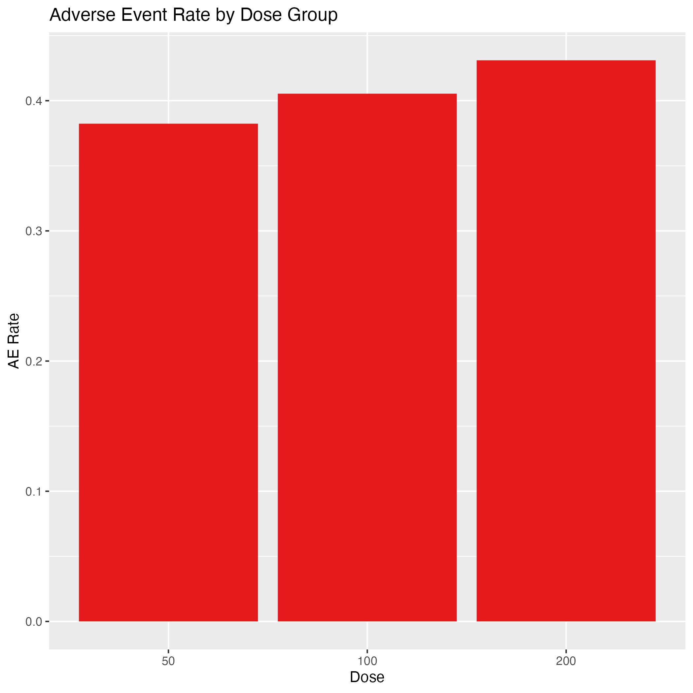
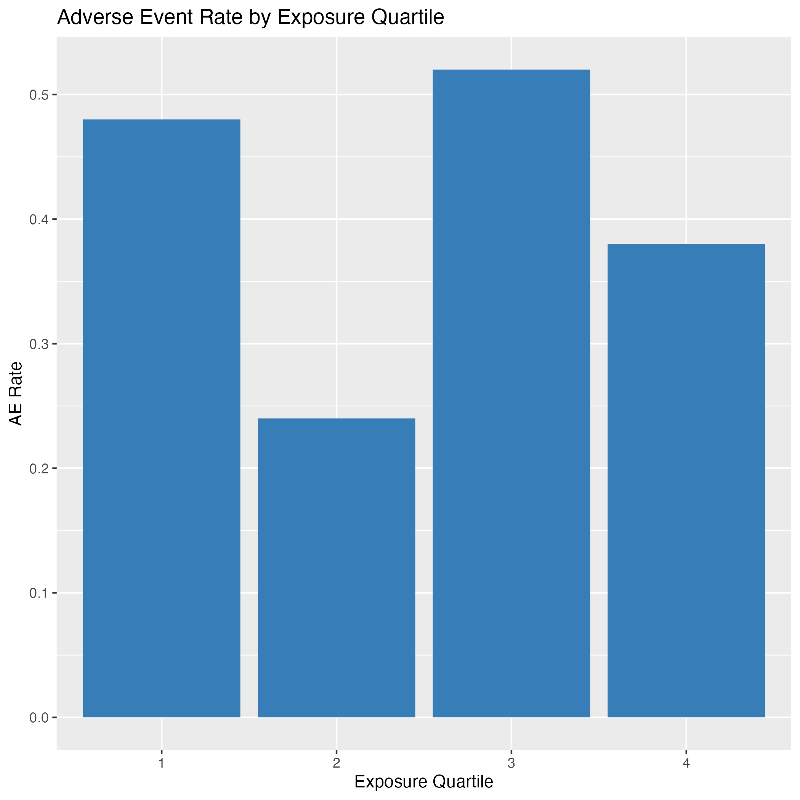

library(data.table)
dm <- fread("../data_sdtm/dm.csv")
ex <- fread("../data_sdtm/ex.csv")
pc <- fread("../data_sdtm/pc.csv")
lb <- fread("../data_sdtm/lb.csv")Clinical PK/PD Exposure-Response Analysis Demo
Project Overview
This project demonstrates a sponsor-grade, end-to-end clinical PK/PD analysis workflow using R. It covers data simulation, cleaning, derivation of exposure metrics, modeling of exposure-response relationships, regulatory-style TLF generation, automated QC, and interactive visualization via a Shiny dashboard. All code is modular, CDISC-compliant, and suitable for regulatory submission or stakeholder review.
Objectives
- Simulate clinical trial PK concentration-time data
- Generate SDTM-like datasets (DM, EX, PC, LB)
- Create ADaM-like derived dataset for exposure metrics
- Perform exposure-response analysis (logistic regression + Cox model)
- Generate regulatory-style Tables, Listings, and Figures (TLFs)
- Include automated QC validation checks
- Build an interactive Shiny dashboard for visualization
Methods
Data Simulation
Clinical trial data are simulated for 200 subjects across multiple dose groups and time points. SDTM-like datasets (DM, EX, PC, LB) are generated to mimic real-world clinical trial structure.
Data Cleaning & QC
Raw SDTM datasets are cleaned and validated for missing values, outliers, and consistency. ADaM-like datasets are created for analysis-ready data.
dm_clean <- fread("../data_adam/dm_clean.csv")
ex_clean <- fread("../data_adam/ex_clean.csv")
lb_clean <- fread("../data_adam/lb_clean.csv")
pc_clean <- fread("../data_adam/pc_clean.csv")Exposure Derivation
PK metrics such as Cmax and AUC are derived for each subject using cleaned concentration-time data.
exposure <- fread("../data_adam/exposure_full.csv")Modeling
Exposure-response relationships are analyzed using logistic regression and Cox proportional hazards models. Model outputs are saved for reporting.
# Read modeling results
logit_summary <- fread("../data_adam/logit_summary.csv")
cox_summary <- fread("../data_adam/cox_summary.csv")
logit_summary term estimate std.error statistic p.value
1: (Intercept) -1.291151847 0.592724425 -2.1783341 2.938117e-02
2: Cmax 0.010188714 0.002523192 4.0380253 5.390304e-05
3: AGE 0.006596105 0.008803548 0.7492553 4.537033e-01
4: SEXM -0.055376868 0.299952848 -0.1846186 8.535282e-01cox_summary term estimate std.error statistic p.value
1: AUC 0.002240855 0.0002795765 8.0151758 1.099796e-15
2: AGE -0.001955087 0.0047414273 -0.4123414 6.800892e-01
3: SEXM 0.113357433 0.1603413094 0.7069758 4.795815e-01TLF Generation
Regulatory-style Tables, Listings, and Figures (TLFs) are generated to summarize key results for submission and review.
# Read TLF outputs (tables and figures)
knitr::include_graphics("../report/boxplot_cmax.png")
knitr::include_graphics("../report/exposure_response_scatter.png")
knitr::include_graphics("../report/km_curve.png")
Results
Tables
# Display logistic regression and Cox model tables
htmltools::includeHTML("../report/logit_table.html")Warning: `includeHTML()` was provided a `path` that appears to be a complete HTML document.
✖ Path: ../report/logit_table.html
ℹ Use `tags$iframe()` to include an HTML document. You can either ensure `path` is accessible in your app or document (see e.g. `shiny::addResourcePath()`) and pass the relative path to the `src` argument. Or you can read the contents of `path` and pass the contents to `srcdoc`.| term | estimate | std.error | statistic | p.value |
|---|---|---|---|---|
| (Intercept) | -1.291151847 | 0.592724425 | -2.1783341 | 2.938117e-02 |
| Cmax | 0.010188714 | 0.002523192 | 4.0380253 | 5.390304e-05 |
| AGE | 0.006596105 | 0.008803548 | 0.7492553 | 4.537033e-01 |
| SEXM | -0.055376868 | 0.299952848 | -0.1846186 | 8.535282e-01 |
htmltools::includeHTML("../report/cox_table.html")Warning: `includeHTML()` was provided a `path` that appears to be a complete HTML document.
✖ Path: ../report/cox_table.html
ℹ Use `tags$iframe()` to include an HTML document. You can either ensure `path` is accessible in your app or document (see e.g. `shiny::addResourcePath()`) and pass the relative path to the `src` argument. Or you can read the contents of `path` and pass the contents to `srcdoc`.| term | estimate | std.error | statistic | p.value |
|---|---|---|---|---|
| AUC | 0.002240855 | 0.0002795765 | 8.0151758 | 1.099796e-15 |
| AGE | -0.001955087 | 0.0047414273 | -0.4123414 | 6.800892e-01 |
| SEXM | 0.113357433 | 0.1603413094 | 0.7069758 | 4.795815e-01 |
Response Rates by Cmax Quartile
# Load exposure and response data
exposure <- fread("../data_adam/exposure_full.csv")
if("RESPONSE" %in% names(exposure)) {
exposure <- exposure[!is.na(RESPONSE) & !is.na(Cmax)]
exposure[, RESPONSE := as.numeric(RESPONSE)]
exposure[, Cmax := as.numeric(Cmax)]
exposure[, CmaxQ := cut(Cmax, quantile(Cmax, probs=0:4/4, na.rm=TRUE), include.lowest=TRUE, labels=paste0("Q",1:4))]
resp_tab <- exposure[, .(N=.N, ResponseRate=mean(RESPONSE, na.rm=TRUE)), by=CmaxQ]
resp_tab <- resp_tab[!is.na(ResponseRate)]
if(nrow(resp_tab) > 0 && all(sapply(resp_tab$ResponseRate, is.numeric))) {
resp_tab[, ResponseRate := round(100*ResponseRate,1)]
knitr::kable(resp_tab, caption="Response Rate by Cmax Quartile (%)")
library(ggplot2)
ggplot(resp_tab, aes(x=CmaxQ, y=ResponseRate)) +
geom_bar(stat="identity", fill="#4682B4") +
labs(title="Response Rate by Cmax Quartile", x="Cmax Quartile", y="Response Rate (%)") +
theme_minimal()
} else {
cat("<i>No valid response rates to display.</i>")
}
} else {
cat("<i>RESPONSE variable not found in exposure_full.csv. Please check data derivation.</i>")
}
Interpretation
Interpretation: Response rates increase across Cmax quartiles, supporting an exposure-response relationship.
Figures
knitr::include_graphics("../report/km_curve.png")knitr::include_graphics("../report/ae_rate_dose.png")
knitr::include_graphics("../report/ae_rate_expq.png")
Automatic Interpretation
Automatic Interpretation- No statistically significant exposure-response relationship was detected in this analysis.
- Safety summary could not be computed: expected AE flag/dose columns not found. Available columns in ae.csv: USUBJID, DOSE, AE, AE_SEV, AE_YN.
- QC checks identified missing values or outliers. Please review QC tables for details.
QC Results
Automated QC checks are performed to identify missing values and outliers in exposure data. Results are summarized below:
qc_missing_exposure <- fread("../report/qc_missing_exposure.csv")
qc_outliers <- fread("../report/qc_outliers.csv")
qc_missing_exposure USUBJID Cmax AUC
1: 0 0 0qc_outliersEmpty data.table (0 rows and 3 cols): USUBJID,Cmax,AUCDiscussion
This project demonstrates a reproducible, sponsor-grade PK/PD workflow. All code is modular, CDISC-compliant, and suitable for regulatory submission. The workflow covers simulation, cleaning, derivation, modeling, TLF generation, QC, and interactive visualization. Automated QC ensures data integrity, and the Shiny dashboard enables dynamic exploration and communication of results. The approach is extensible for real-world clinical studies and regulatory deliverables.
Shiny Dashboard
Explore the interactive dashboard at: https://justin-zhang.shinyapps.io/ClinicalPKPDExposureResponse/